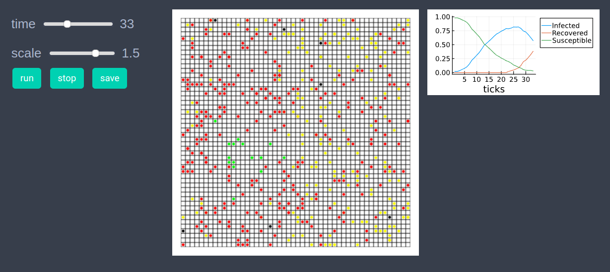
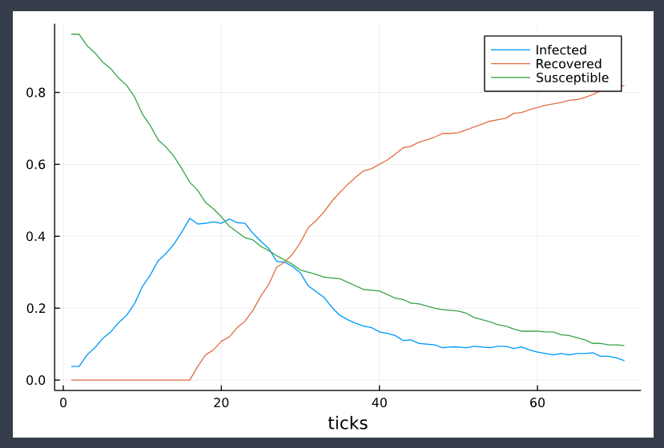

SIR model
In the agent-based modeling approach an epidemiological model, like SIR model can have a large number of parameters depending upon the requirements. Below we will implement a basic SIR model in EasyABM.
using EasyABMStep 1: Create Agents and Model
In our SIR model there will be four type of agents - susceptible, infectious, recovered, dead. We assume that the recovered agents become immune and do not get infected again. We create 500 2d agents all of type agentS (later in the initilisation step will set the type of some agents to be agentI). The not_well_since property of an agent is the time since the agent got infected. Our model has parameters initially_sick (number of agents initially sick), sickness_duration (duration of sickness), infection_prob (probability of infection when an infected agent comes in contact with a susceptible agent) and death_prob (the probability of death from infection).
@enum agentstate begin
susceptible=1
infectious=2
recovered=3
dead=4
end
agents = grid_2d_agents(500, pos = Vect(1,1), color=cl"green",
atype = susceptible, not_well_since = 0,
keeps_record_of = Set([:atype, :color, :pos]));
model = create_2d_model(agents, size=(50,50),
agents_type = Static, ## agents don't get removed from or added to the model
space_type = Periodic, initially_sick = 10,
sickness_duration = 21, infection_prob = 0.8,
death_prob=0.05);Step 2: Initialise the model
In the second step we initialise the agents by defining initialiser! function and sending it as an argument to init_model!. In the initialiser! function we set first initially_sick number of agents to be in infectious state and set their color to cl"red". All other agents are set to be in susceptible state with color cl"green". We also set each agents position at the center of a randomly selected patch.
function initialiser!(model)
for (i,agent) in enumerate(model.agents)
if i<=model.parameters.initially_sick
agent.atype = infectious
agent.color = cl"red"
else
agent.atype = susceptible
agent.color = cl"green"
end
agent.not_well_since = 0
x = rand(1:model.size[1])
y = rand(1:model.size[2])
agent.pos = Vect(x, y) # center of a random patch
end
end
init_model!(model, initialiser = initialiser!)Step 3: Defining the step_rule! and running the model
In this step we implement the step logic of the SIR model in the step_rule! function and run the model for 100 steps.
function die_or_recover(agent, death_prob)
if rand()<death_prob
agent.atype = dead
agent.color = cl"black"
else
agent.atype = recovered
agent.color = cl"yellow"
end
agent.not_well_since = 0
end
function infect_neighbors(agent, nbrs, infection_prob)
for nbr in nbrs
if (nbr.atype ==susceptible) && (rand()< infection_prob)
nbr.atype = infectious
nbr.not_well_since = 0
nbr.color = cl"red"
end
end
end
function change_position(agent)
dx =rand(-1:1)
dy =rand(-1:1)
agent.pos += Vect(dx,dy)
end
function step_rule!(model)
parameters = model.parameters
for agent in model.agents
nbrs = neighbors_moore(agent, model, 1) #immediate neighbors on grid
if agent.atype == infectious
agent.not_well_since +=1
if agent.not_well_since > parameters.sickness_duration
die_or_recover(agent, parameters.death_prob)
elseif agent.not_well_since>1
infect_neighbors(agent, nbrs, parameters.infection_prob)
end
end
if agent.atype !=dead
change_position(agent)
end
end
end
run_model!(model, steps=100, step_rule = step_rule! )Step 4: Visualisation
In order to draw the model at a specific frame, say 4th, one can use draw_frame(model, frame = 4). If one wants to see the animation of the model run, it can be done as
animate_sim(model,
agent_plots = Dict(
"Susceptible"=> ag -> ag.atype == susceptible ? 1 : 0,
"Infected" => ag -> ag.atype == infectious ? 1 : 0,
"Recovered" => ag -> ag.atype == recovered ? 1 : 0
),
show_patches=true
)
After defining the step_rule! function we can also choose to create an interactive application (which currently works in Jupyter with WebIO installation) as
create_interactive_app(model, initialiser= initialiser!,
step_rule= step_rule!,
model_controls=[(:initially_sick, "slider", 1:500),
(:sickness_duration, "slider", 5:25),
(:infection_prob, "slider", 0.01:0.01:1.0),
(:death_prob, "slider", 0.01:0.01:0.1)
],
agent_plots = Dict("Susceptible"=> ag -> ag.atype == susceptible ? 1 : 0,
"Infected" => ag -> ag.atype == infectious ? 1 : 0,
"Recovered" => ag -> ag.atype == recovered ? 1 : 0
),
frames=70,
show_patches=true) 
Step 5: Fetch Data
The following line of code fetches data of average number of susceptible, infectious and recovered agents. The function get_agents_avg_props averages over all agents the values returned by functions sent to it as arguments.
df = get_agents_avg_props(model,
ag -> ag.atype == susceptible ? 1 : 0,
ag -> ag.atype == infectious ? 1 : 0,
ag -> ag.atype == recovered ? 1 : 0,
labels = ["Susceptible", "Infected", "Recovered"],
plot_result = true
)
References
1.) https://towardsdatascience.com/modelling-a-pandemic-eb94025f248f